i called this game happy obbies i started with the obby template and used the things in there to build the obby in my own style
| template | work in process | after i edited it |
|---|---|---|
| 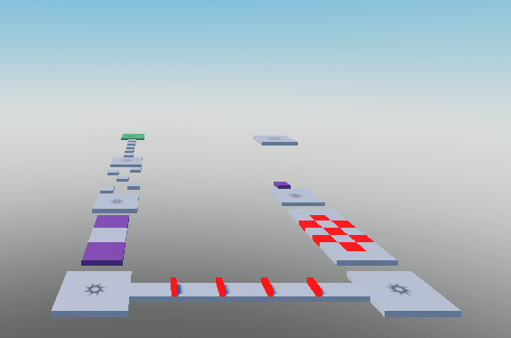 | 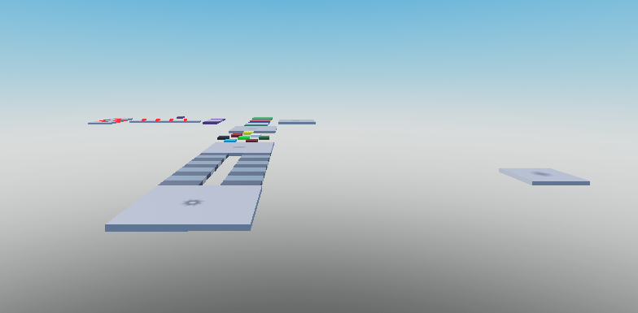 | 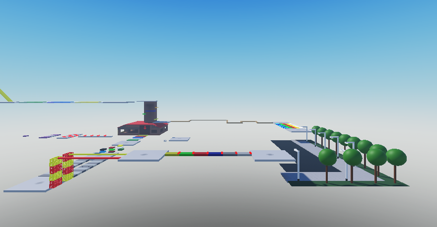 |
now the player shouldnt know wich level he is playing so i added some invisible parts with an big number on it but later i made a neat level sign
| before | after |
|---|---|
| 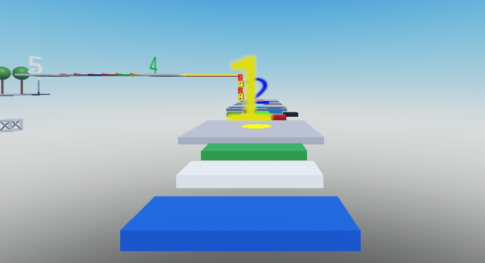 | 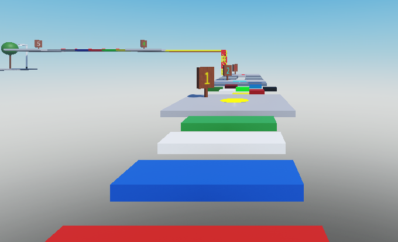 |
i also made an lobby i improved it alot from the first time with beter lightning i also added 2 extra parts to it an premium lobby and an door with an password to collect event bonusses
| work in process | before | after | ||||||
|---|---|---|---|---|---|---|---|---|
| 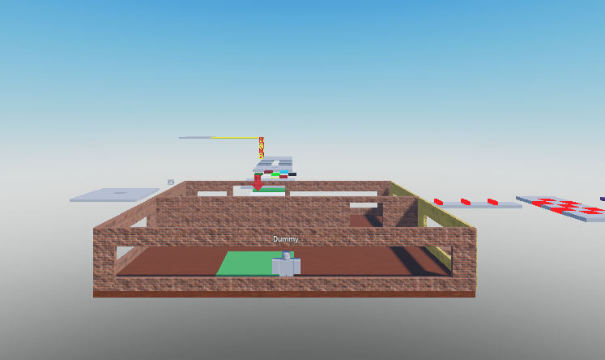 | 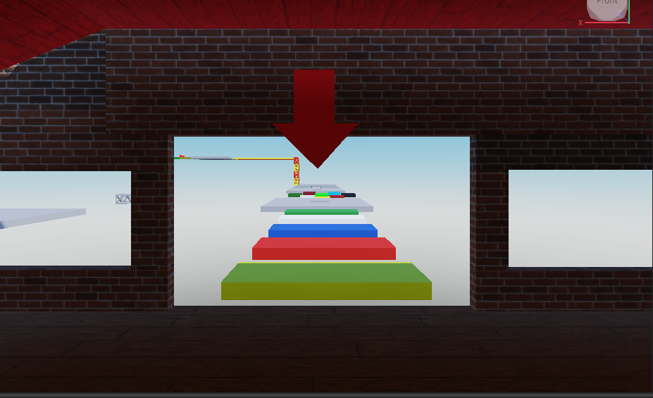 | 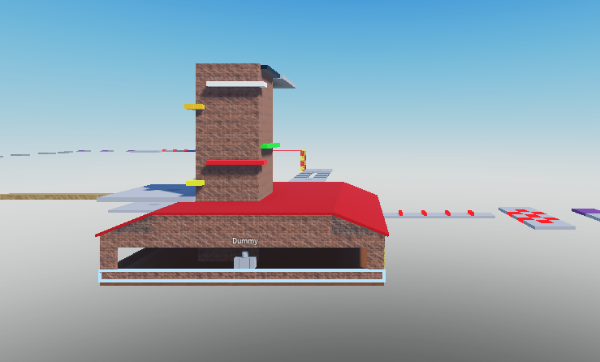 | 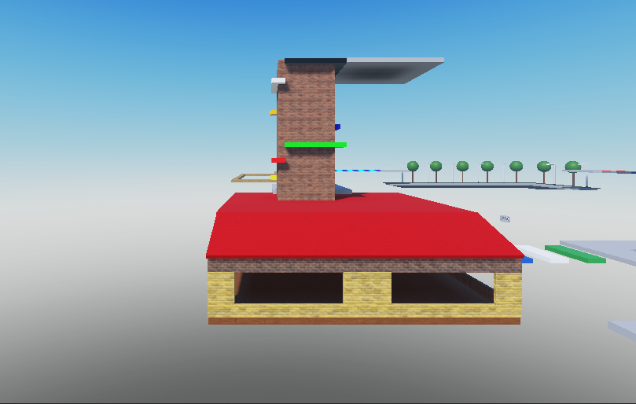 | 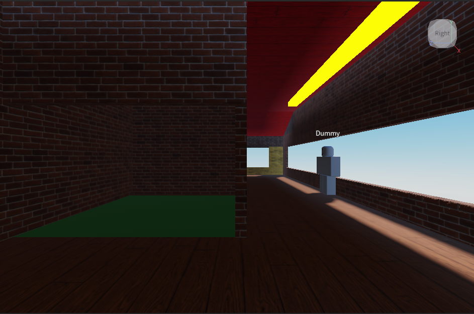 | 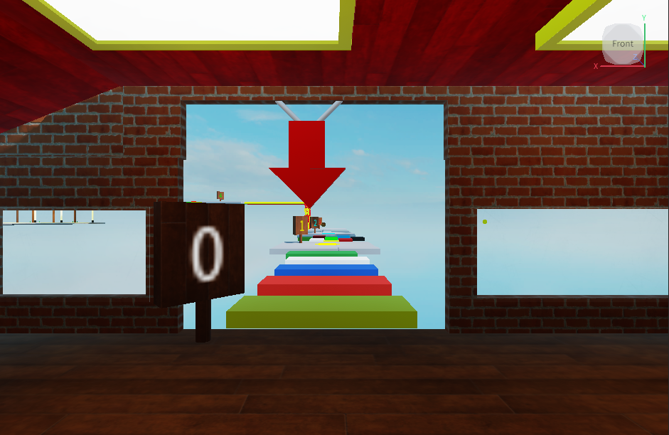 | 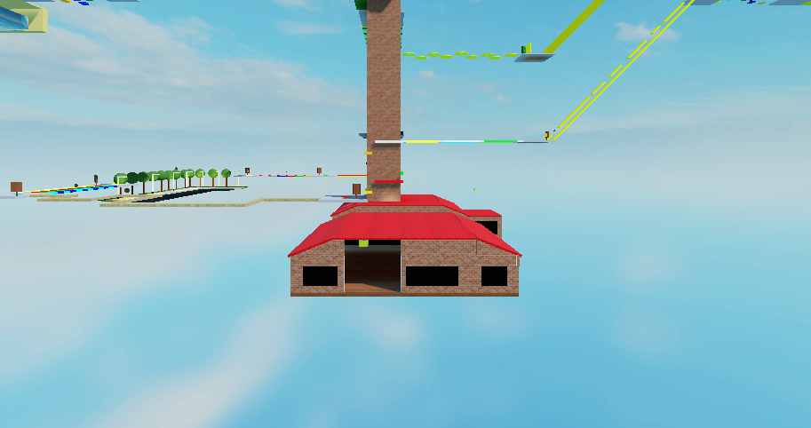 | 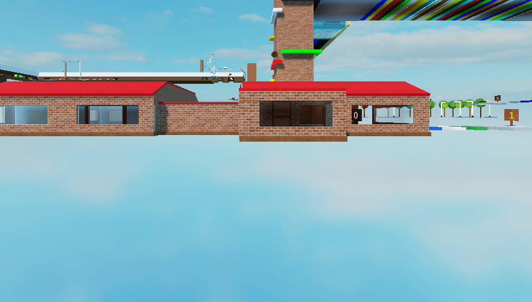 | 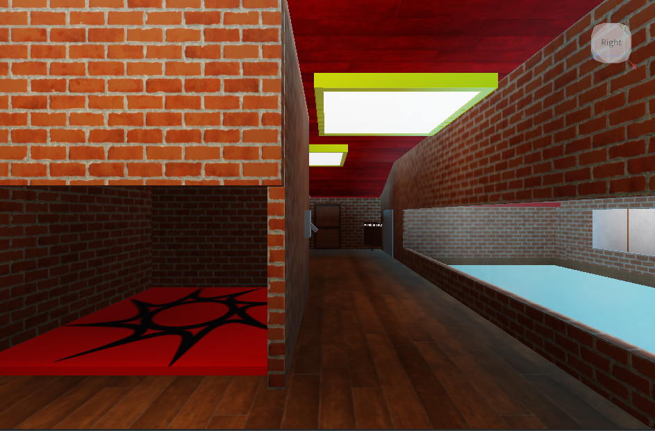 |
and so one later i also changed the checkpoints to a new system from an youtube tutorial and also i got to heard that the name didnt match the game on this point it has almost 30 levels firstly i has a good idea in mind where you come in like an building and needs to find a way out but so on i decided with that to make it so there diferent themes and each time you completed a theme obby you come in a building or somthing where you need to find a way out to go to the next theme
| 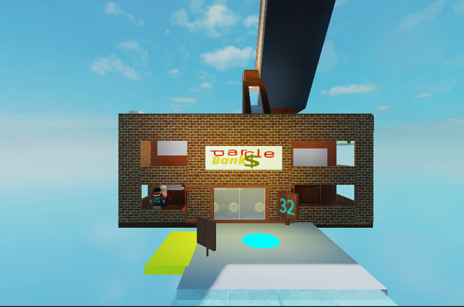 | 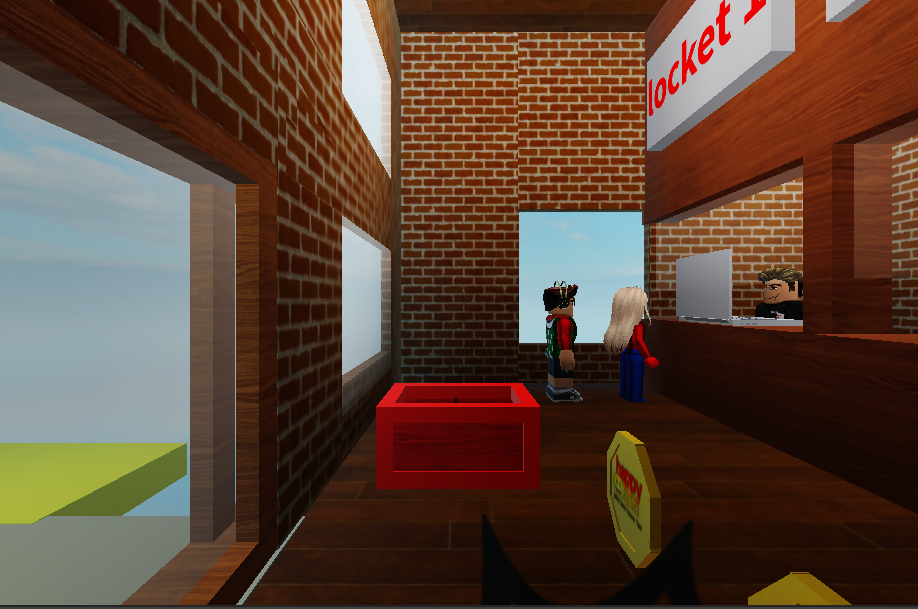 | 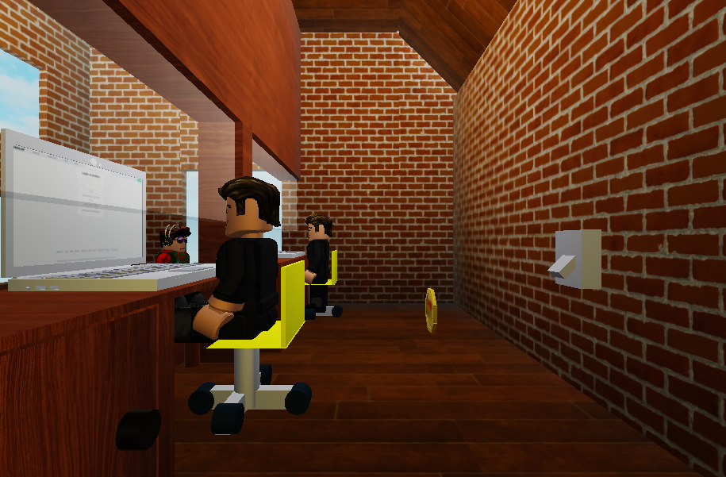 |